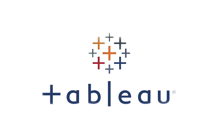

System Engineer | Data Analytics | Computing and Informatics
¡Welcome to profile!
Soy Victor, graduado de Ingeniería de
Sistemas de la Univesidad Nacional de Cajamarca, apasionado por la
tecnología y la innovación, llevo 3 años
trabajando como DBA y Data
Analytics
No solo interpreto datos y desarrollo
soluciones, también me involucro directamente en
el soporte operativo, diagnóstico
y mantenimiento de equipos, conectividad y sistemas críticos
Mi enfoque combina análisis estratégico con
resolución técnica en campo, lo que me permite
aportar valor en todas las capas de la operación
tecnológica.
Mis aventuras transcurren inmersas en la tecnología
★ ★ ★
KNOWLEDGE
Mis bebes

MY PROJECTS
Panel visual con KPIs dinámicos, alertas visuales, filtros
avanzados e insights accionables para decisiones estratégicas en
tiempo real.
Gestión inteligente y en tiempo real de inventarios y crisis, con KPIs dinámicos, alertas predictivas
y automatización para decisiones rápidas y efectivas.
Proyecto que muestra insights obtenidos, decisiones tomadas y cómo
influyeron directamente en los resultados.
Visualización dinámica de tráfico vehicular con filtros por zona,
hora y tipo de vehículo, actualizada en tiempo real.
Monitorea producción de proveedores, cumplimiento de entregas y
eficiencia, ayudando a optimizar la cadena de suministro y reducir
riesgos operativos.
Integra información clave por zonas, productos y clientes para
tomar decisiones ágiles y maximizar ingresos.
Web interactiva para explorar películas, con búsqueda, filtros por
género y año, desarrollada para usuarios libres.
Página web profesional con menú digital, galería, formulario de
contacto y diseño responsivo orientado a experiencia de usuario
premium.